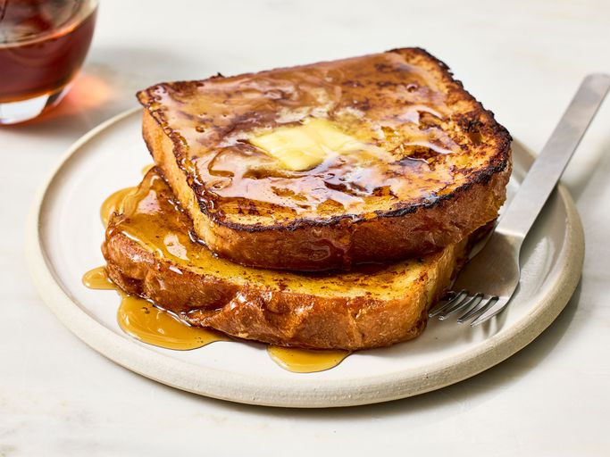

French Toast
This fabulous French toast recipe works with many types of bread — white, whole wheat, brioche, cinnamon-raisin, Italian, or French! Delicious served hot with butter and maple syrup.
Ingredients
- 6 thick slices bread
- 2 large eggs
- 2/3 cup milk
- 1/4 teaspoon vanilla extract
- salt to taste
- 1 tablespoon unsalted butter
Steps
- Gather all ingredients.
- Whisk milk, eggs, vanilla, cinnamon, and salt together in a shallow bowl.
Lightly butter a griddle or skillet and heat over medium-high heat. Dunk bread in the egg mixture, soaking both sides.
- Transfer to the hot skillet and cook until golden, 3 to 4 minutes per side.
- Serve hot.